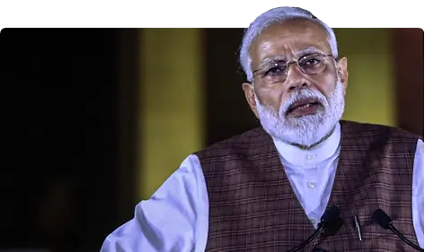

Narendra Damodar Das Modi; born on 17 September 1950 in Vadnagar,is currently serving as the 14th Prime Minister of India. He was the chief minister of Gujarat from 2001 to 2014 and is the Member of Parliament from Varanasi. He is a member of the Bharatiya Janata Party (BJP) and of the Rashtriya Swayamsevak Sangh (RSS).
Getting into Politics
- Completed secondary education in his hometown
- Introduced to RSS at an age of eight years
- Work at his father's tea stall on the Vadnagar Railway Station
- Travelled in North India's religious spots for two years
- Upon his return to Gujarat in 1971, he became a full-time worker for the RSS
- After the State of Emergency he went into hiding
- RSS assigned him to the BJP in 1985
- Held several positions within the party hierarchy until 2001, rising to the rank of general secretary
Political Life
- As Gujarat's Chief Minister
- Modi was appointed as Chief Minister of Gujarat in 2001 due to Keshubhai Patel's failing health and poor public image following the earthquake in Bhuj
- Elected to the legislative assembly soon after
- His administration has been considered complicit in the 2002 Gujarat riots
While his policies as chief minister—credited with encouraging economic growth—have received praise, his administration has been criticised for failing to significantly improve health, poverty and education indices in the state.
- As 14th Indian Prime Minister
- Modi led the BJP in the 2014 general election
- It gave the party a majority in Lok Sabha
- Modi's administration has attempted to
- raise foreign direct investement inthe Indian Economy
- reduced spending on healthcare and social welfare programmes
- improve efficiency in the bureaucracy
- centralise power by abolishing the Planning Commission
- begin a high-profile sanitation campaign
- initiate a demonetisation of high-denomination banknotes
- transform taxation regime, i.e., introduction to Goods and Service Tag(GST)
- Following his party's victory in the 2019 Indian general election, his administration-
- revoked the special status of Jammu and Kashmir
- introduced the Citizenship Amendment Act which prompted widespread protests across the country, resulting in a formal repeal of the latter
- introduced three controversial farm laws which prompted widespread sit-ins across the country, resulting in a formal repeal of the latter
Described as engineering a political realignment towards right-wing politics, Modi remains a figure of controversy domestically and internationally over his Hindu nationalist beliefs and his handling of the 2002 Gujarat riots, cited as evidence of an exclusionary social agenda.
References:-
- Wikipedia
- Official Website
- Lok Sabha Id
- His Works
- DNA India
- New York Times
- IMDb